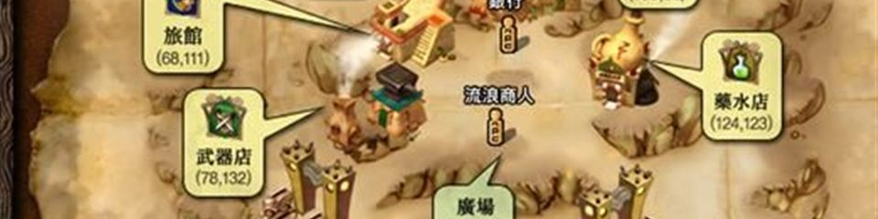

神之領域
日版資料庫
怪物
怪物
怪物圖鑑
依等級看怪物
依地圖看怪物
掉落物品查詢
怪物分布
道具
道具
盒子・彩券內容
道具功能一覽
商城道具
寵物・守護動物
裝備
武器
防具・飾品
衣服（身體防具）
角色・技能
人物能力值
技能
任務・活動
任務
製作・強化
活動
地圖・商店
地圖
商店
其他
系統操作
官方公告
討論區・雜項

衣
衣服（身體防具）
各職業男女衣服・共 22 頁
Item/身體防具
Item/身體防具/共通其他
Item/身體防具/女修道士
Item/身體防具/女其他
Item/身體防具/女吟遊詩人
Item/身體防具/女戰士
Item/身體防具/女盜賊
Item/身體防具/女聖職者
Item/身體防具/女阿修羅
Item/身體防具/女預言者
Item/身體防具/女騎士
Item/身體防具/女魔術師
Item/身體防具/男修道士
Item/身體防具/男其他
Item/身體防具/男吟遊詩人
Item/身體防具/男戰士
Item/身體防具/男盜賊
Item/身體防具/男聖職者
Item/身體防具/男阿修羅
Item/身體防具/男預言者
Item/身體防具/男騎士
Item/身體防具/男魔術師